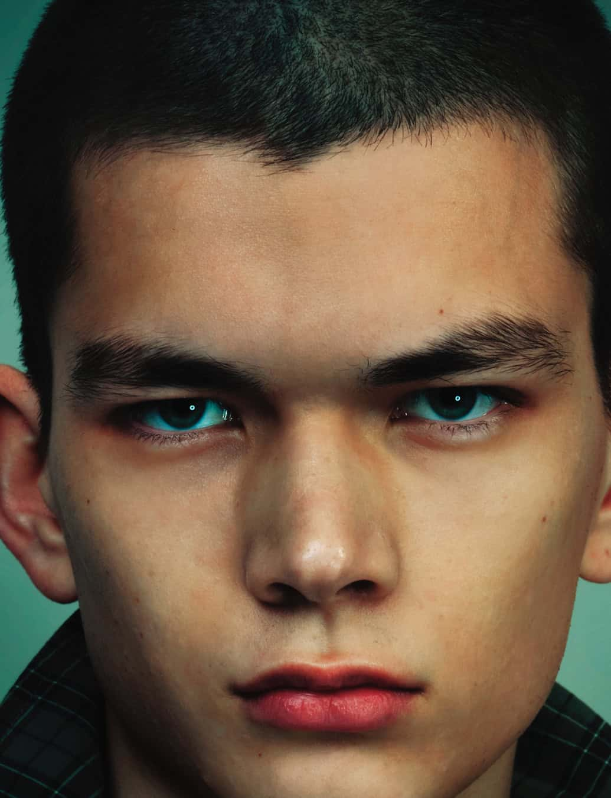

Golden sand covered the floor of the Conservatoire National des Arts et Métiers. The light caught it at ankle height, warm and heavy, like a summer that has been going on too long. Models walked through it with glowing eyes, luminous pinpricks fixed to their foreheads. Craig Green had built a hallucination and dressed it in bedsheets.
The London designer's S/S 2026 collection, shown in Paris during men's fashion week, drew from a single obsession: the Beatles in the late 1960s. Green had been thinking about what four young men from Liverpool achieved in a handful of years. The speed of it. The invention. He described their output as feeling "non-human, in a way," and channelled that feverish creative pace into one of the most vivid collections of the season.
Florals arrived everywhere, clashing and deliberate. Green and his team sourced vintage bedsheets from charity shops, from Save the Children donations, from listings on Vinted and eBay. They scanned the patterns, those kitschy roses and repeating daisies that lined British bedrooms through the 1960s and 1970s, and printed them onto coats, billowing trousers and shirts that had been sliced into vertical strips. The effect was part car wash, part commune, part childhood memory of pulling sheets over your head.
Domestic psychedelia
The garments held a tension between the utilitarian and the hallucinatory. Military shirts migrated into skirts. Parkas in Green's signature fisherman silhouette sat alongside plaid trench coats and tender knits. The Fred Perry collaboration continued with striped rugby shirts and knitted polos that grounded the collection in something wearable and familiar.
Green has always found his materials in unexpected places. For A/W 2022, he worked with a UK diving equipment manufacturer to produce cocooning rubber jackets. His debut collection featured hand-painted calico. Here, the domestic fabric of a charity-shop bedsheet became the raw material for a Paris runway. The logic is consistent. Creativity, Green believes, comes from limitations. Restrictions force more interesting solutions than unlimited freedom ever could.
The colour palette drew from 1970s interior psychology. Harvest yellows. Faded greens. The sandy, slightly acidic tone of a room that has absorbed decades of light. Even the runway floor, that expanse of glowing yellow sand, felt like an extension of the clothes rather than a backdrop for them.
Green finds beauty in the uniform, in the shared garment, in the idea that belonging can be worn. His Beatles fixation makes perfect sense. Four matching suits. One vision.
Isabelle RoweEyes wide open
The models' glowing eyes were achieved with small dollhouse lights fixed to Amazon-purchased tiaras. Green has spoken about the device as a reference to seeing into another dimension, the acid-era promise of perception expanded. The effect on the runway was stranger and more tender than that sounds. These figures moved slowly through sand with pinpoints of light where their gaze should be, somewhere between sentinels and sleepwalkers.
Some models carried fabric swaths lodged in their mouths, a detail inspired by Matthew Barney's Cremaster Cycle and by Green's own childhood habit of biting bedsheets. The personal and the art-historical collapsed into one gesture. This is how Green works. A memory of his father's plumbing overalls sits beside a reference to a 1990s performance film. Nothing is too grand or too small to serve the idea.

Craig Green S/S 2026. Photography by Giulio Ventisei for 10 Magazine
The case for belonging
Green founded his label in 2012. He won Best British Menswear Designer at the Fashion Awards three years running, from 2016 to 2018. In 2023 he became fashion design professor at the University of Applied Arts Vienna, following Grace Wales Bonner, Hussein Chalayan and Raf Simons in the role. His Docklands studio looks more like a DIY store than a design atelier. Past collections have produced life-raft sculptures, padded crash-test figures and technicolour tent installations.
What holds the work together is an interest in protection and ritual. His clothes often function like armour or vestments, garments that shield the wearer from something unspecified. The Beatles collection continued this thread. Green spoke about the band's visual uniformity, the way four matching suits expressed a collective identity rather than four individual ones. In a fashion culture that prizes personal expression above all else, Green keeps returning to the power of the shared garment.
His S/S 2026 collection lands at a moment when menswear broadly favours the quiet and the considered. Green's response is louder, stranger, more generous. Psychedelic florals on charity-shop bedsheets, processed through a London studio and shown on a golden floor in Paris. The most original menswear proposition of the season happened in a room that smelled like sand.